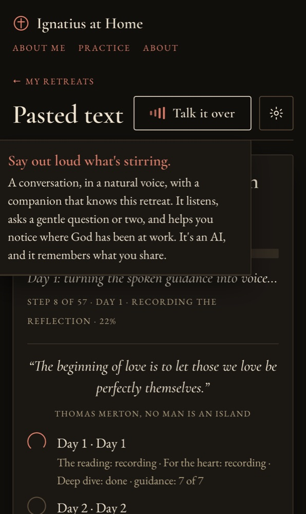
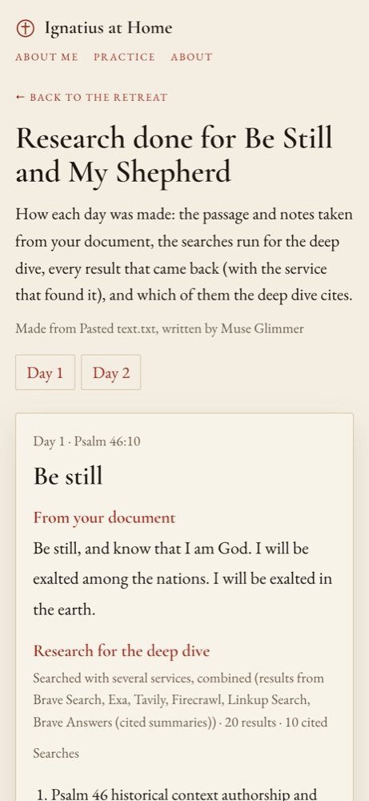

Writing the reflection and the deep dive, researching, tailoring the guidance, and recording each part.


POST /api/retreats/{id}/days/{day}/build (or straight after planning). A background job; two run at a time.app/search.py runs every research service at once and merges the results. Claude also searches the web itself, and lists its sources.days.{n}.tracks (reading, heart, deep: script, status, sources) and days.{n}.guideday{n}_{part}.mp3, .words.json timings, day{n}_research.jsonThe retreat's model writes the heart, the deep dive and the guidance: anthropic/claude-opus-5.5 by default, or Jetstream's muse-glimmer for free accounts.
Brave Search, Brave Answers, Exa, Tavily, Firecrawl, Linkup, together. One that runs out is paused until next month. Claude's own web search is $0.01 a search.
Andrew, Ava, Brian, Emma, Christopher, Aria, Ryan, Sonia, through the open-source edge-tts, with word timings.
eleven_multilingual_v2: Brian, George, Bill, Sarah, Alice, Lily. Full accounts only.